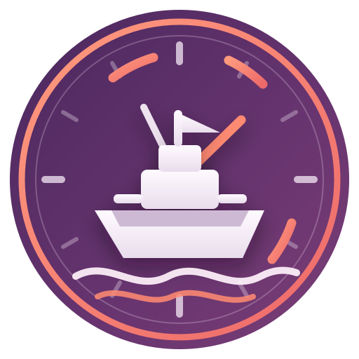

World of Warships
PTS Rewards Planner
Plan Public Test sessions, convert mission windows to local time, and estimate the repeatable Live Server rewards your plan can earn.
Local-time scheduleBasic estimatesAdvanced planningReward totals

World of Warships
Plan Public Test sessions, convert mission windows to local time, and estimate the repeatable Live Server rewards your plan can earn.